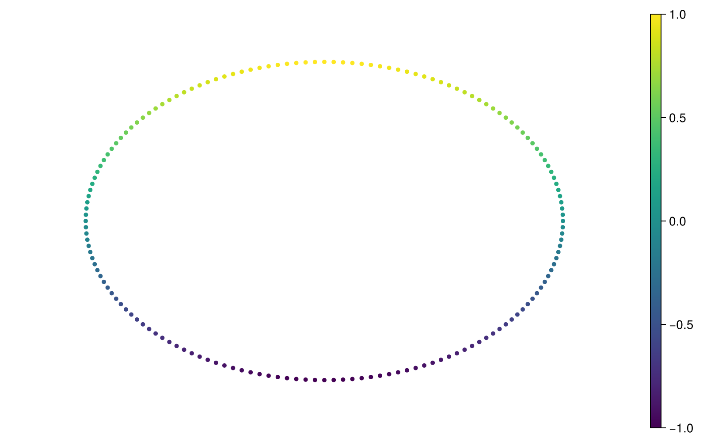
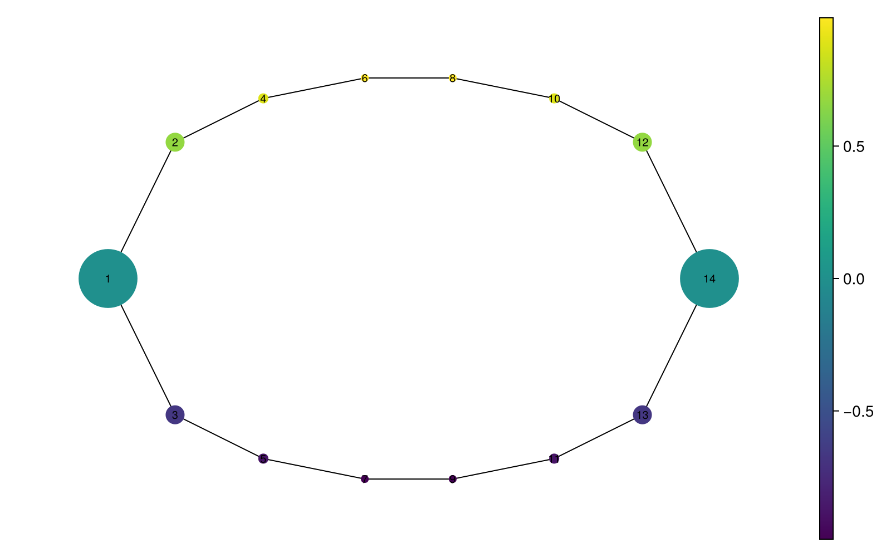
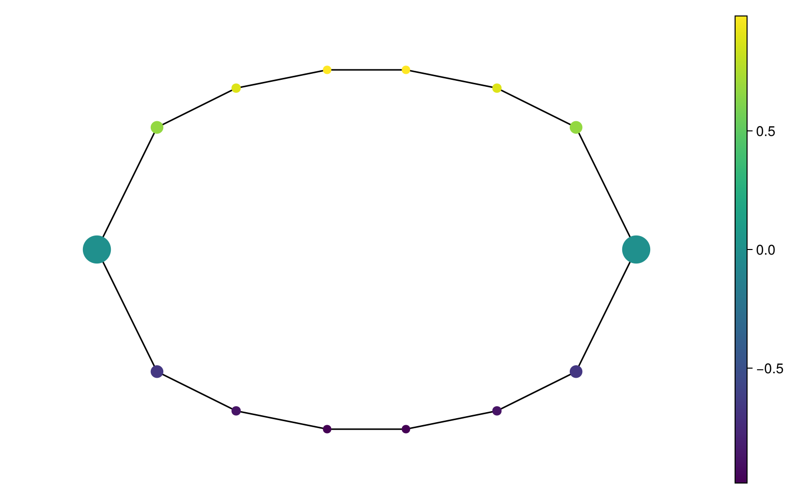
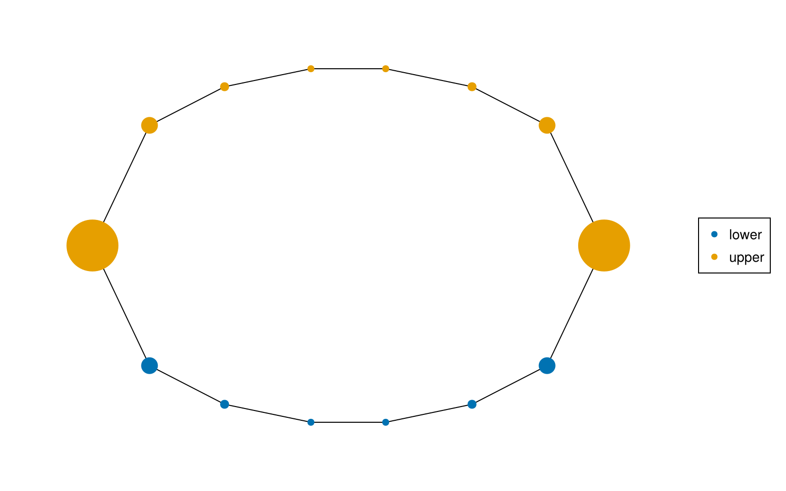
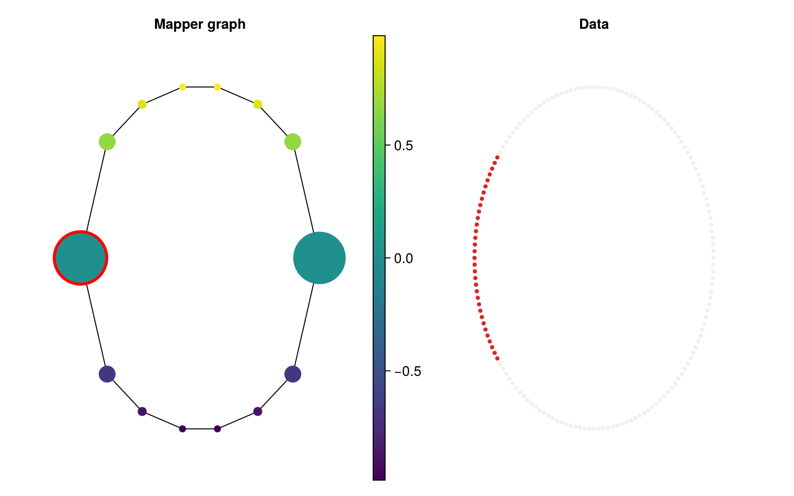

Read a Mapper graph through its data
Build a circle example
Sampling the circle at fixed angles makes this example deterministic. The horizontal coordinate is the Mapper filter, overlapping intervals cover its range, and DBSCAN separates the upper and lower arcs within each interval.
using CairoMakie, TDAplots
using TDAmapper.ImageCovers: R1Cover
using TDAmapper.IntervalCovers: Uniform
using TDAmapper.Refiners: DBscan
using Graphs: nv, ne
CairoMakie.activate!()
set_theme!(size=(800, 500), Axis=(
xautolimitmargin=(0.15, 0.15), yautolimitmargin=(0.15, 0.15)))
θ = range(0, 2π; length=161)[1:end-1]
X = EuclideanSpace([[cos(t), sin(t)] for t in θ])
cover = R1Cover(first.(X), Uniform(length=8, expansion=0.35))
M = classical_mapper(X, cover, DBscan(radius=0.2))
@assert nv(M.g) == length(M.C) > 0
(points=length(X), nodes=nv(M.g), edges=ne(M.g))(points = 160, nodes = 14, edges = 14)M.C[i] contains indices into X. Nodes are subsets of observations; edges represent their intersections. These subsets can overlap, so an observation can belong to several nodes. This is why Mapper gives a graph rather than a disjoint cluster assignment.
The theme reserves a little extra axis margin so large node markers remain fully visible in exported figures.
Look at the cloud first. metricspace_plot uses two or three coordinates and accepts per-point numeric values or string labels.
heights = [p[2] for p in X]
metricspace_plot(X; color=heights, colormap=:viridis, markersize=7)
Make node colour answer a question
node_colors turns a per-point vector into a per-node summary. For numbers the default is the mean. The name refers to the purpose: it returns summary values, not rendered colour objects. Keep the vector aligned with the original point order.
positions = layout_landmarks(M)
node_heights = node_colors(M, heights)
@assert length(node_heights) == length(M.C)
mapper_plot(M; node_positions=positions, node_values=node_heights,
show_node_ids=true, colormap=:viridis)
Here each node sits at the centroid of its members, so the upper and lower arcs stay recognizable. The colourbar reports mean height. A mean can hide variation: node_colors(M, heights; f=maximum) asks for the highest member instead. The summary changes colour values without rebuilding the graph.
Default marker sizes map member counts into the display range 10–75. They aid comparison but are neither raw counts nor proportional areas. To choose your own display range, pass one numeric size per node:
sizes = rescale(length.(M.C); min=12, max=40)
mapper_plot(M; node_positions=positions, node_values=node_heights,
node_size=sizes, edge_size=1.5)
Categorical values belong in a legend
Suppose each observation has a class label. The default string aggregation picks the most common class within a node; tied winners are sorted and joined with /, up to three winners.
labels = [p[2] >= 0 ? "upper" : "lower" for p in X]
node_labels = node_colors(M, labels)
mapper_plot(M; node_positions=positions, node_values=node_labels)
A label like lower/upper means a tie in the subset, not a third underlying class. If mixtures matter, inspect counts in labels[M.C[i]] or supply a domain-specific aggregation function. Numeric class IDs passed as numbers create a continuous colorbar; convert them to strings when the intended meaning is categorical.
Select a node and examine its members
mapper_explorer returns a MapperExplorer with a figure and a selection Observable. We use a closure to keep the same node positions: layout_function is called with the graph, so a precomputed Mapper layout is captured explicitly.
explorer = mapper_explorer(M;
node_values=node_heights,
layout_function=g -> positions,
dims=[1, 2])
explorer.selected_node[] = 1
@assert explorer.selected_node[] == 1
explorer.figure
The selected node gets a red border, its member observations are highlighted, and all other observations are dimmed. Membership still follows M.C[1]; selecting a node does not recompute Mapper.
selected_ids = M.C[explorer.selected_node[]]
explorer.selected_node[] = nothing # clear the selection
(members=length(selected_ids), first_member=first(selected_ids))(members = 33, first_member = 65)To click nodes and hover over tooltips, run the same construction with an interactive backend loaded:
using GLMakie, TDAplots
explorer = mapper_explorer(M; inspector=true)
display(explorer.figure)This snippet continues the earlier M example in an environment where GLMakie is installed. Clicking empty graph space clears selection. The explorer supports numeric node values; use mapper_plot for categorical colouring.
For high-dimensional data, use dims=[1, 3] or provide a two/three-dimensional embedding as data. Keep one embedded point per original observation in the same order. An embedding changes the right-panel view, not which observations are selected.
Export a selected view
explorer.selected_node[] = 1
save("selected-mapper.png", explorer.figure; px_per_unit=2)
@assert isfile("selected-mapper.png")In a script or REPL, this writes to the working directory. Use .svg or .pdf for vector output with CairoMakie. Returning a figure displays it in many notebooks; scripts generally need an explicit display(fig) or save(...).